Why this architecture matters
The system is not only a workout library. It connects exercise discovery, live physiological feedback, location-based social interaction, and coach oversight into one continuous training flow.
A formal process portfolio for an Active Lifestyles web application that connects trainee-facing workout guidance with coach-facing monitoring, intervention, and reflection tools.
Module: CPT208 Human-Centric Computing | Track: Active Lifestyles | Project Theme: C3 Go Trainers
TrainerSync is structured as a shared web application: trainees discover exercises through smart filters and motion demos, live sessions convert heart-rate and progress data into timely interventions, and coaches can remotely monitor bound trainees through a dashboard.
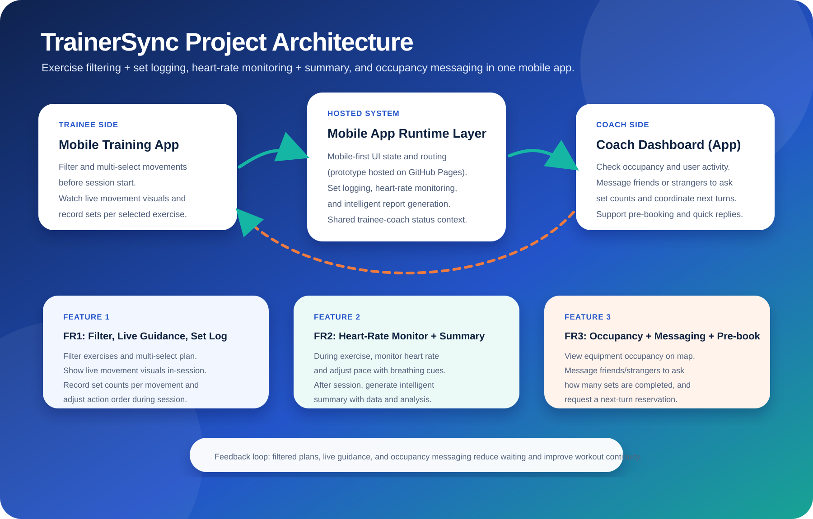
The system is not only a workout library. It connects exercise discovery, live physiological feedback, location-based social interaction, and coach oversight into one continuous training flow.
The high-fidelity web prototype is available at https://rainm1st.github.io/CPT208-TrainerSync/.
Our group chose the Active Lifestyles track because gym training is a highly social, physically demanding, and feedback-sensitive activity, yet many existing digital tools only support the workout before it starts or after it ends. In real gym sessions, coaches often need to supervise multiple trainees at once, while trainees need quick reassurance that they are using the right equipment, moving at the right pace, and staying within a safe and effective training state. We saw a clear opportunity to design something more human-centered than a static fitness log or video library. TrainerSync was therefore conceived as a connected training experience that links the coach dashboard and trainee interface through real-time status cues, lightweight telemetry logic, and shared session feedback. We were also interested in the playful dimension of active systems: rather than only recording what happened, the system should shape motivation in the moment. This track fits our strengths because it allowed us to combine interface design, interaction flow, fitness-domain content, and service thinking into one coherent project. In short, we selected Active Lifestyles because it offers a meaningful design challenge where better interaction design can directly improve confidence, safety, coordination, and sustained engagement.
| Source | 3 Things Done Well | 3 Things Missed |
|---|---|---|
| Consolvo, McDonald, and Landay (2009) | Strong behavior-change framing; clear links between feedback and action; useful persuasive design strategies. | Limited coach-trainee coordination; little gym-floor operational detail; weak support for live intervention. |
| Hamari, Koivisto, and Sarsa (2014) | Broad gamification review; identifies engagement mechanisms; useful evidence-focused comparison. | Not specific to physical coaching; limited context sensitivity; few concrete interface patterns. |
| Sardi, Idri, and Fernandez-Aleman (2017) | Health-focused gamification synthesis; broad evidence base; useful motivational patterns. | Few real-time coaching models; limited spatial gym context; weak analysis of multi-user supervision. |
| Brooke (1996) | Simple usability benchmark; quick to run across iterations; produces comparable scores. | Does not explain root causes; limited emotional insight; not specific to embodied training experiences. |
| Product | 3 Things Done Well | 3 Things Missed |
|---|---|---|
| Keep | Large exercise library; accessible training plans; beginner-friendly mobile guidance. | Weak live coach linkage; limited onsite adaptation; feedback is mostly individual and post-hoc. |
| Apple Fitness+ | High production quality; strong device ecosystem; clear guided workout flow. | No coach dashboard; not built for gym-floor supervision; weak multi-trainee coordination. |
| Strava | Strong tracking; social visibility; excellent long-term performance history. | Not instruction-centered; limited indoor gym support; no live correction workflow. |
| Nike Training Club | Structured workouts; polished content; approachable for different ability levels. | No real-time coach intervention; little adaptive group support; recap is not coach-centered. |
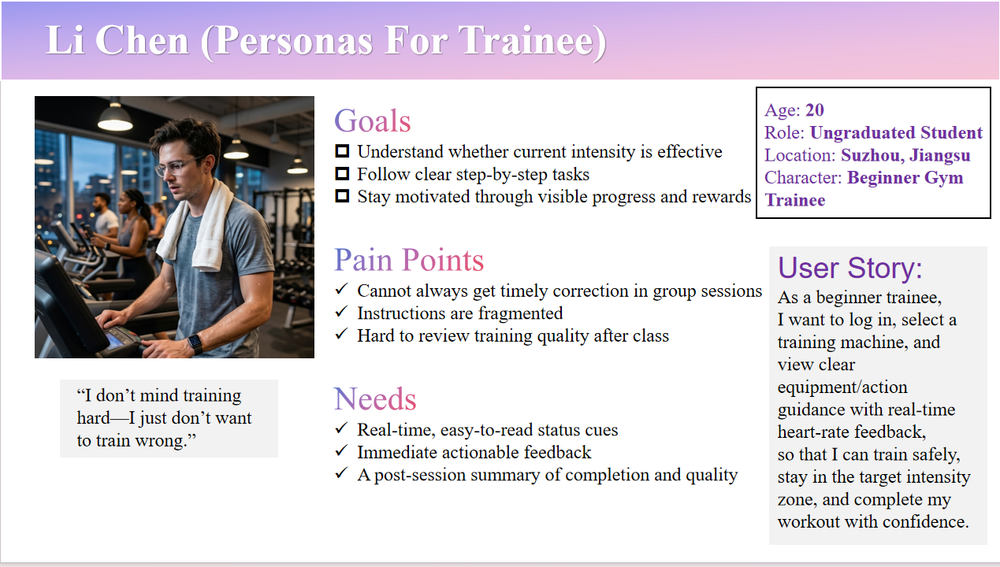
Age 20 | Undergraduate student | Beginner gym trainee | Mobile-first
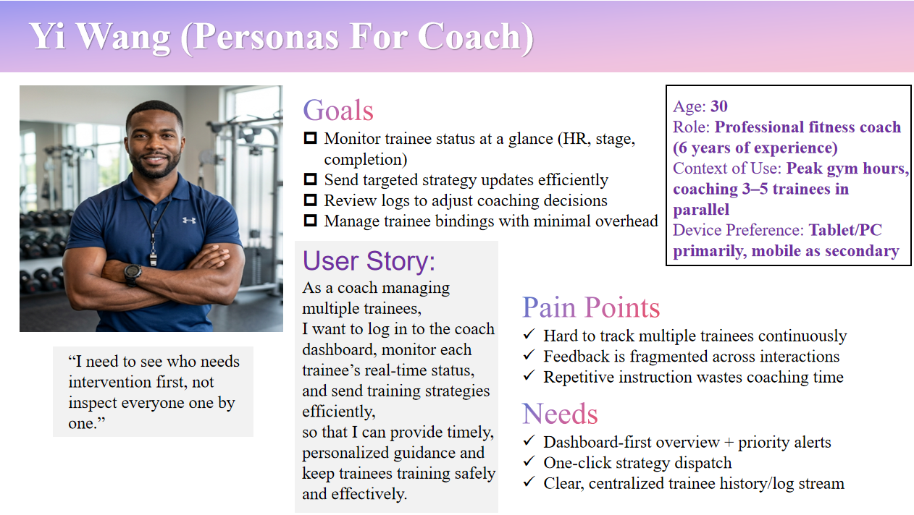
Age 30 | Professional fitness coach | Manages 3 to 5 trainees in parallel | Tablet or PC first
The journey maps below capture the current pain points around session preparation, live guidance, coach intervention, and post-session reflection.
Pain points around uncertainty, delayed correction, and weak training reflection.
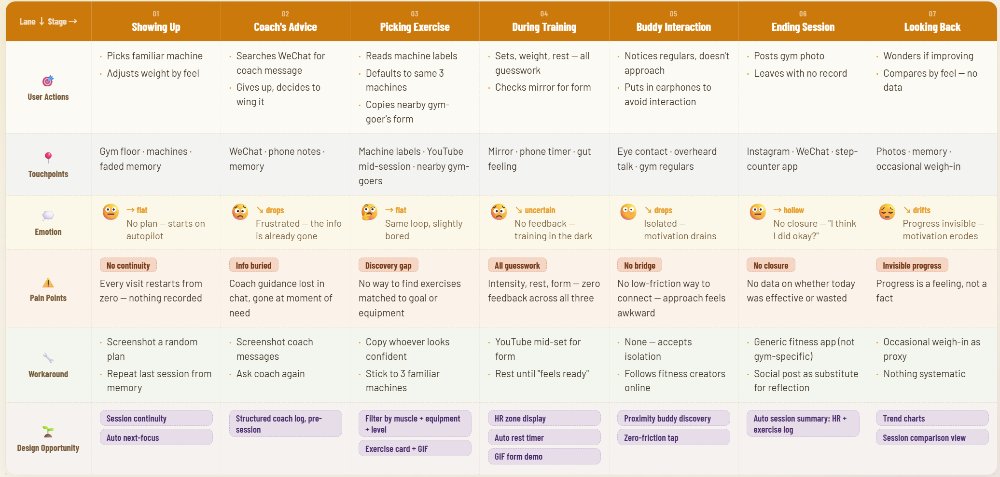
Pain points around monitoring multiple trainees, deciding priority, and recording guidance.
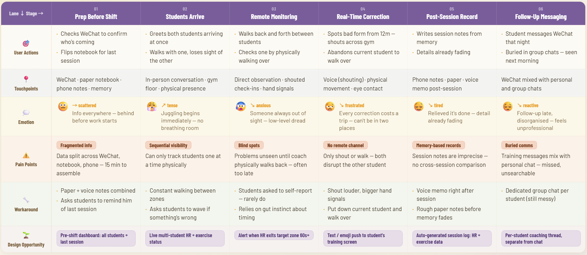
Trainees can combine multiple conditions to find suitable exercises. For example, selecting "chest muscles" and "cable equipment" filters the library to matching movements. Each exercise includes a static image or animated GIF so users can quickly understand the correct movement path and force direction.
During training, the software works as a digital monitoring panel. It tracks heart-rate changes, current sets, and overall progress in real time. When a specific exertion stage or heart-rate threshold is detected, the system displays concrete breathing suggestions, such as when to exhale while pushing a heavy barbell, helping the trainee maintain rhythm and core stability.
With location enabled, the system shows nearby coaches or workout buddies on a map. Users can send lightweight emoji interactions such as fire or muscle icons. More importantly, after a binding relationship is established, the coach can remotely read the trainee's heart rate and progress panel on a phone, enabling guidance beyond physical distance.
High novelty and potentially rich correction, but intrusive in a gym setting and dependent on camera framing, lighting, and privacy consent.
Chosen direction. It supports low-friction coach visibility, clear trainee feedback, and fast intervention during a real session.
Useful for records, but too passive because it only explains performance after the moment when support was needed.
A low-fi artifact does not have to be a Figma file. For this portfolio, the updated HTML wireframe is used as an interactive wireframe prototype. It documents early navigation, screen hierarchy, coach-trainee roles, and the intended flow before visual polish.
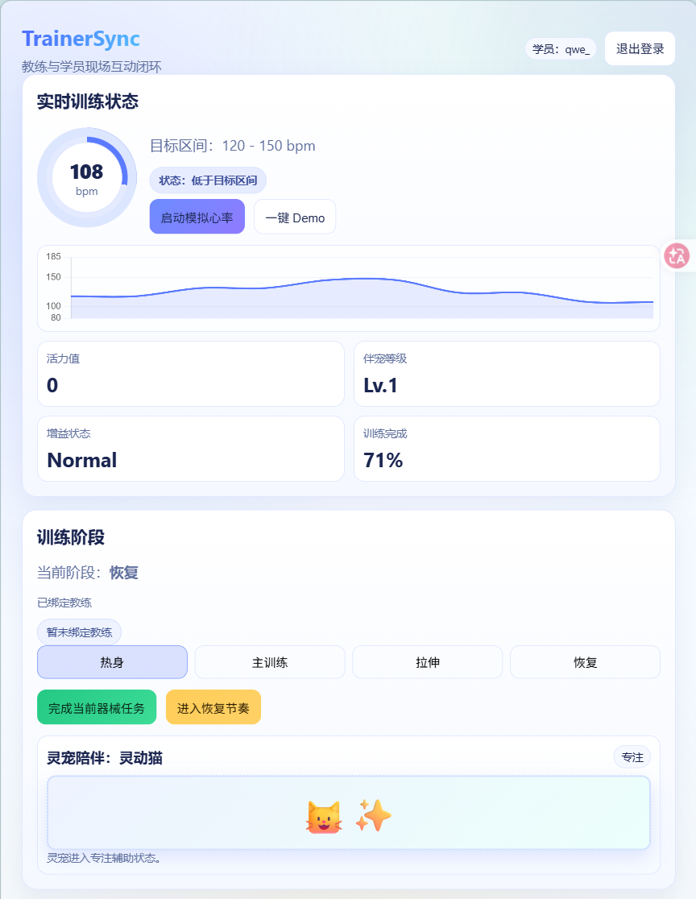
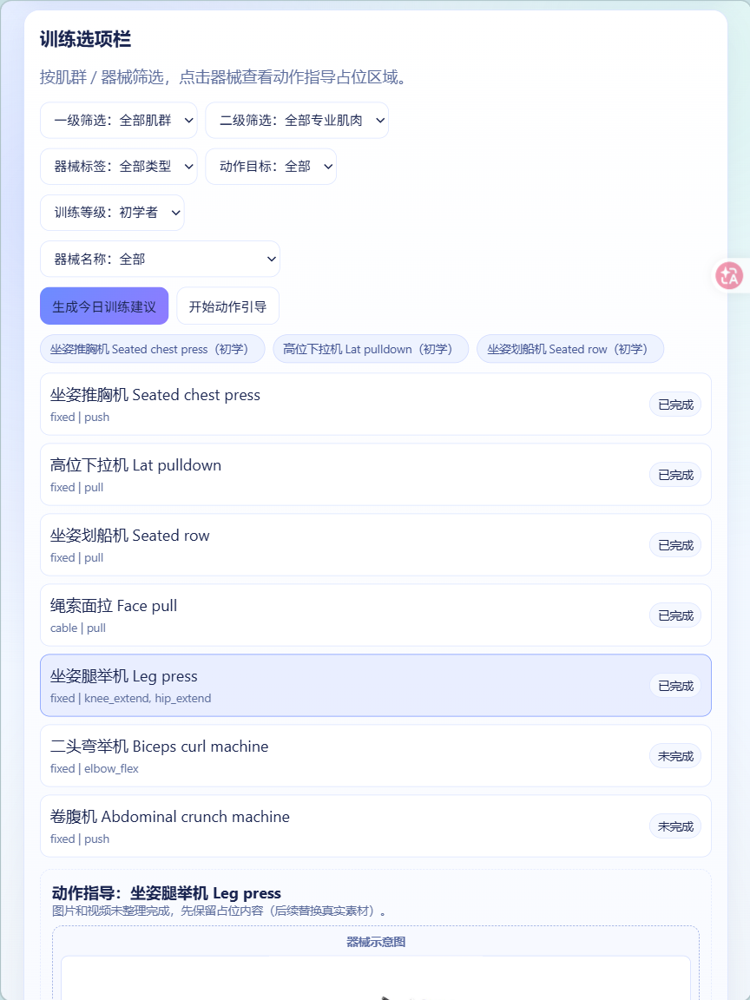
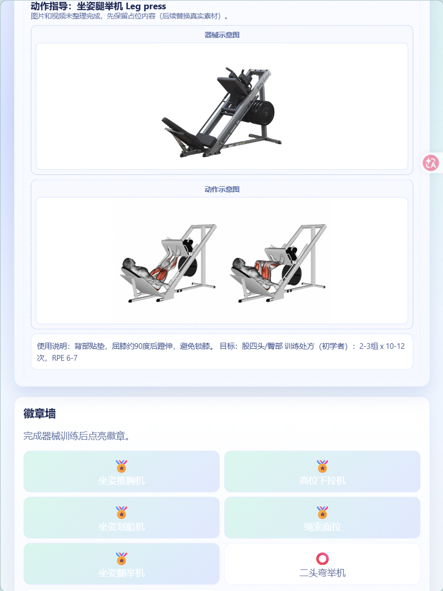
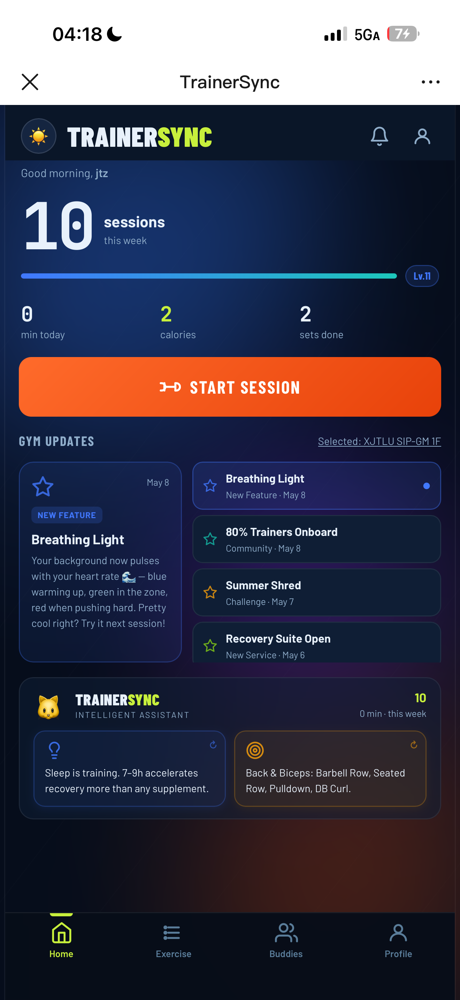
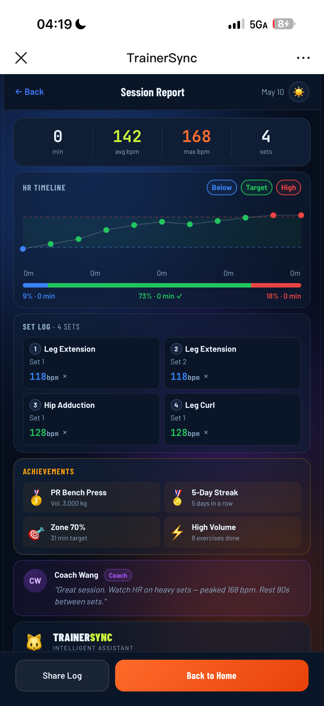
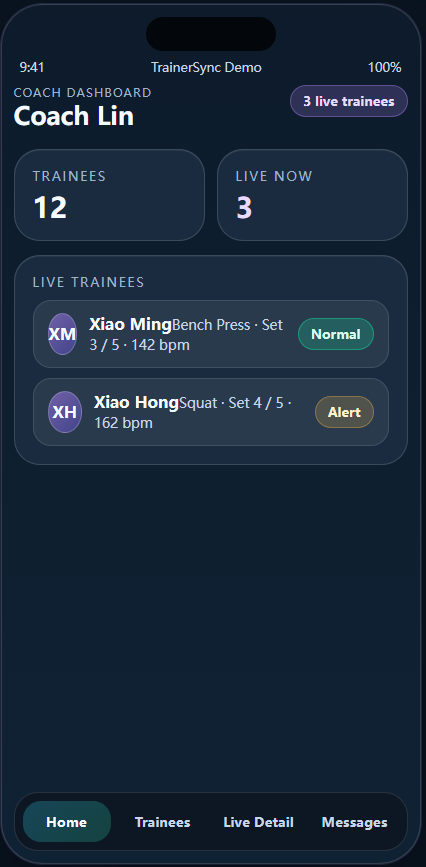
Current hosted demo: https://rainm1st.github.io/CPT208-TrainerSync/
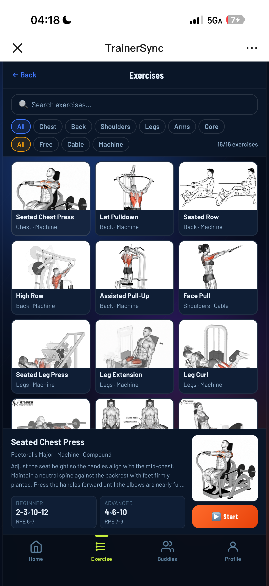
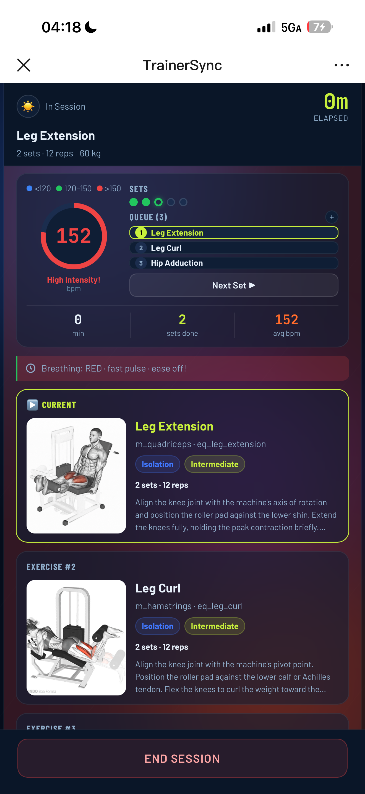
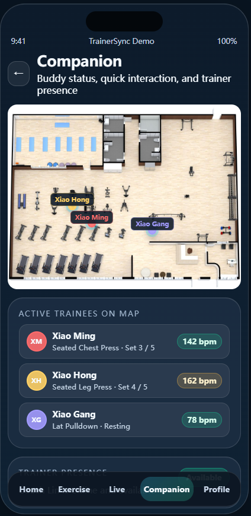
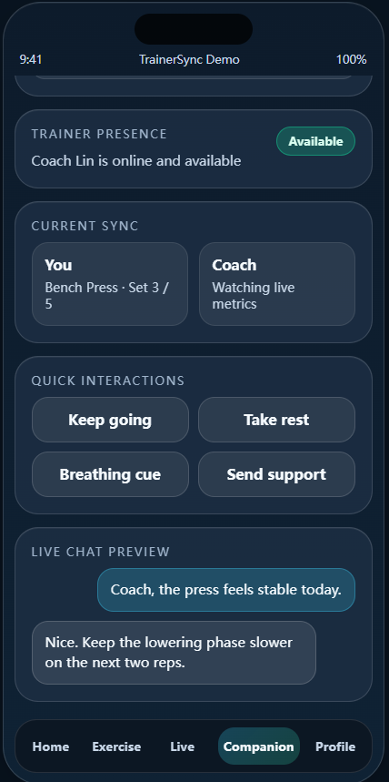
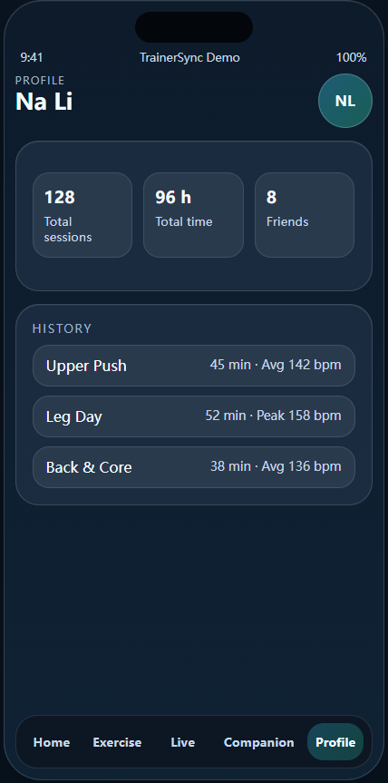
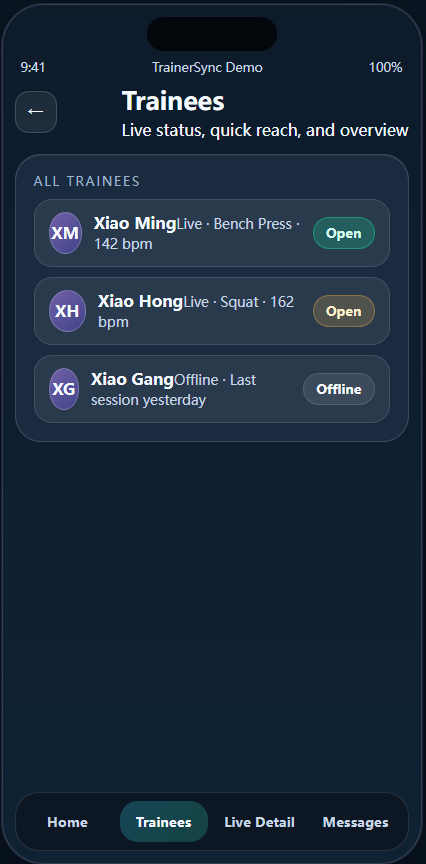
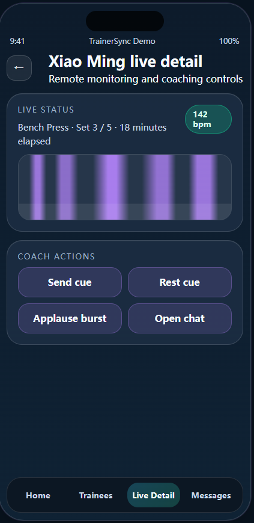
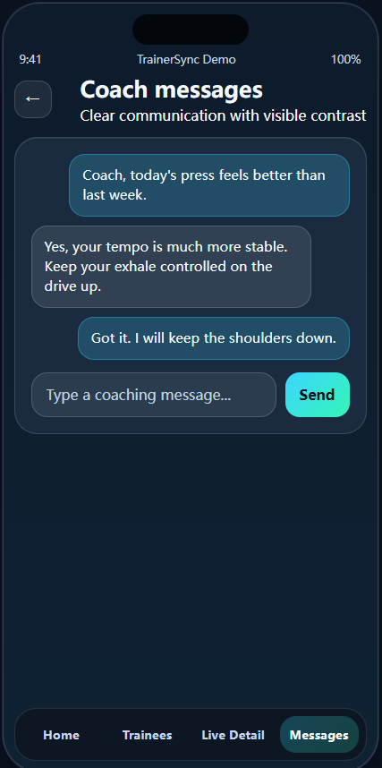
Led trainee persona research, user story writing, poster and portfolio content structure, active-lifestyle motivation framing, and final English copy review. Supported screenshot selection and user journey interpretation.
Led high-fidelity interface implementation, route structure, responsive web layout, GitHub Pages deployment, and screenshot export. Supported integration between trainee pages and coach-facing flows.
Led coach workflow design, dashboard information architecture, monitoring logic, intervention scenarios, and comparison of design alternatives. Supported evaluation task design and data table preparation.
Led low-fi wireframe exploration, product iteration documentation, visual asset organization, reference collection, and usability testing materials. Supported final reflection and AI disclosure wording.
The Alpha testing summary below is written as a draft reporting structure. Replace the participant labels and results with real collected evidence before final submission if your course requires verified user data.
Profile: undergraduate student, occasional gym user, mobile-first.
Observed issue: The participant understood the workout library but hesitated before starting a live session because the CTA hierarchy was not strong enough.
Design implication: Make the session start action more prominent and use clearer intensity preview cues.
Profile: regular gym user, familiar with workout apps, values progress tracking.
Observed issue: The live screen was engaging, but the participant wanted a clearer explanation of what heart-rate colors meant.
Design implication: Add microcopy for target zones and make warnings more explainable.
Profile: experienced gym user asked to complete coach monitoring tasks.
Observed issue: The coach dashboard was useful, but priority ordering needed to be more obvious when several trainees required attention.
Design implication: Add clearer alert ranking, status labels, and one-click strategy dispatch.
Earlier interface screens showed the core idea but had weaker visual hierarchy and less explicit feedback logic.
The current version strengthens task entry, feedback visibility, coach monitoring, and session reflection.
TrainerSync matters because it treats fitness technology as a shared human-centered service rather than a private tracking tool. The design can improve confidence, safety, and coach efficiency, but it also creates ethical responsibilities. Heart-rate cues and training status should not be framed as medical judgement. Users need consent controls, clear explanations of what data is visible to coaches, and boundaries around session history. The playful layer should support motivation without creating pressure, shame, or over-monitoring.
AI tools were used to support English drafting, portfolio layout refinement, and the creation of the project architecture SVG diagram. The project team remains responsible for checking accuracy, replacing draft evaluation content with verified evidence, and ensuring that all submitted claims are truthful. Persona images and any AI-assisted visual assets should be cited according to university policy if they were generated or edited with AI tools.
Suggested disclosure text: "This portfolio used OpenAI Codex/GPT assistance for language editing, layout structuring, and an AI-assisted architecture diagram. The team reviewed and edited the final submission."
We acknowledge CPT208 teaching staff for the project brief and assessment guidance. We also acknowledge pilot participants and classmates who provided feedback on the TrainerSync concept and interface flow.